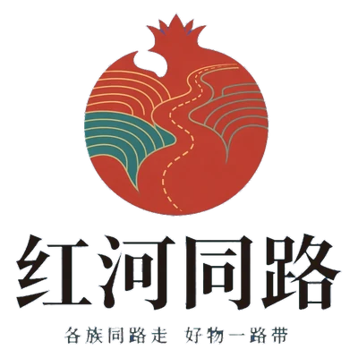
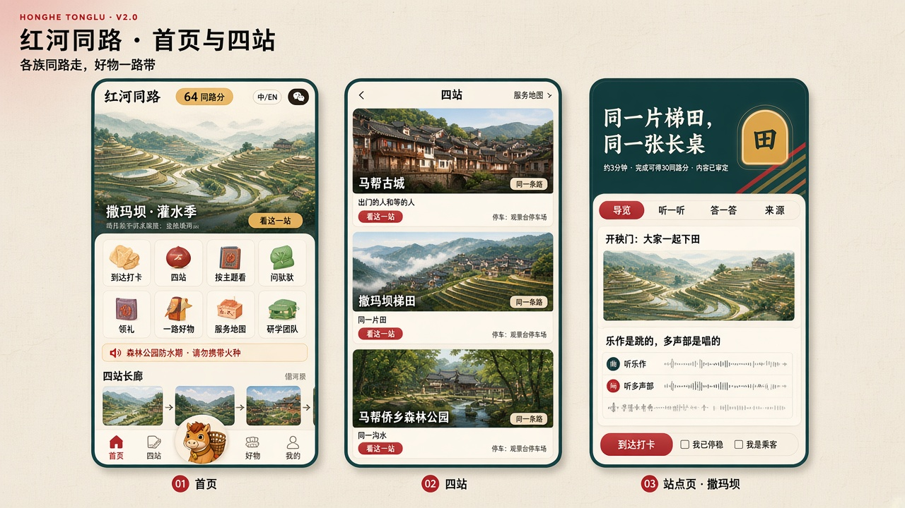
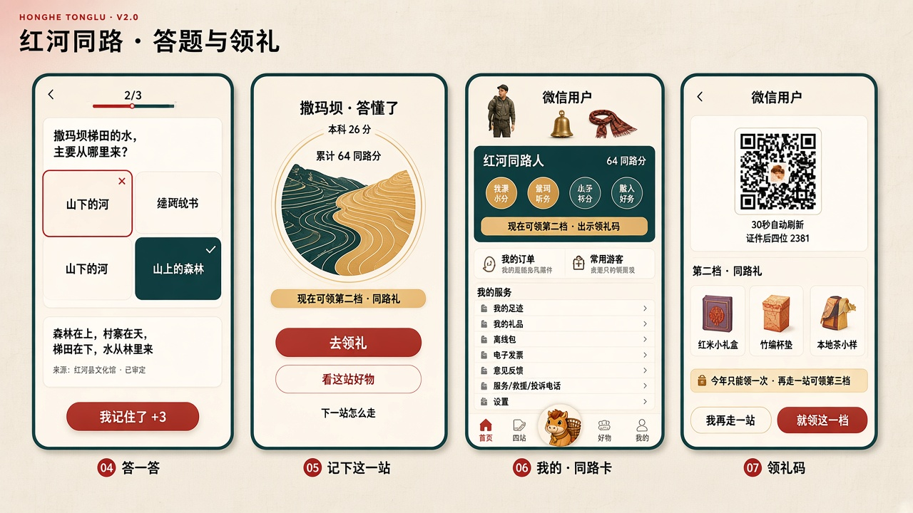
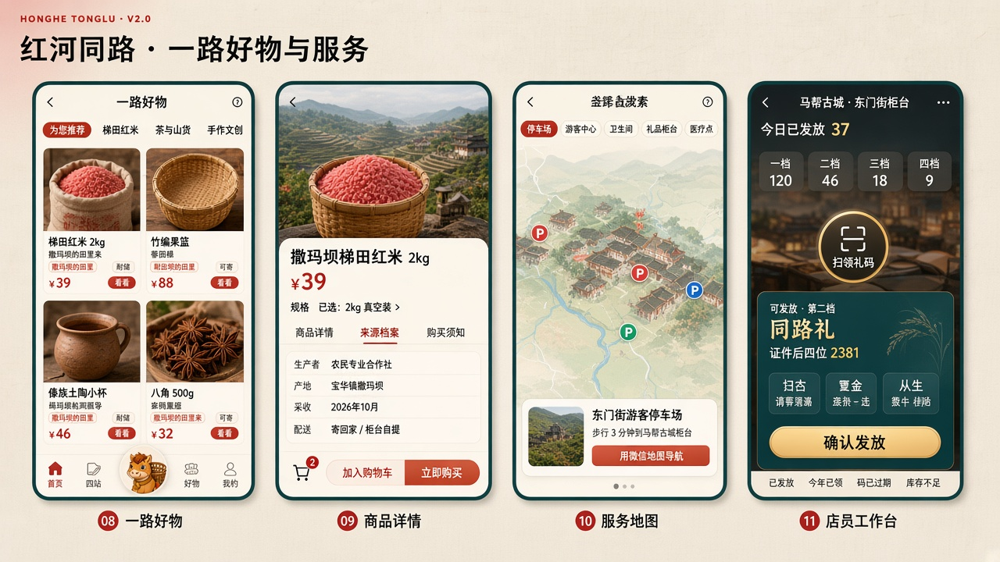
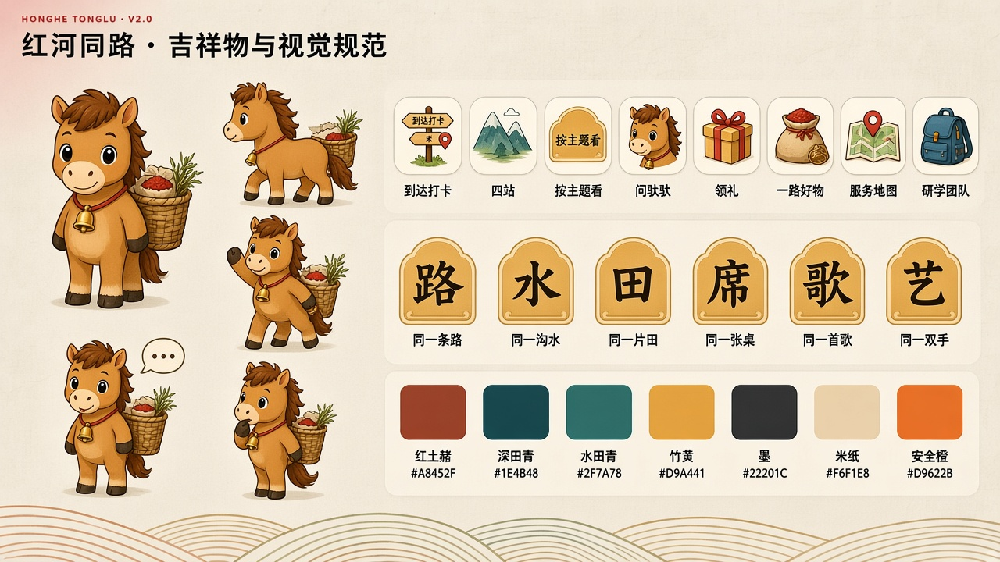
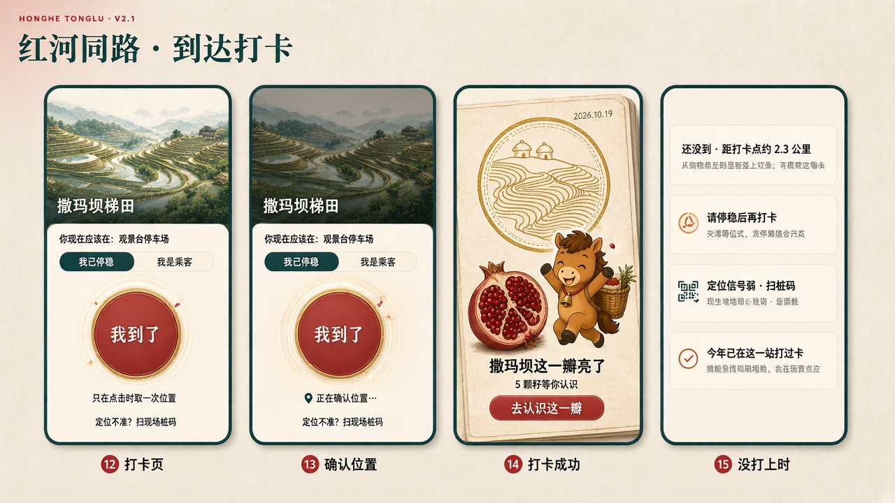
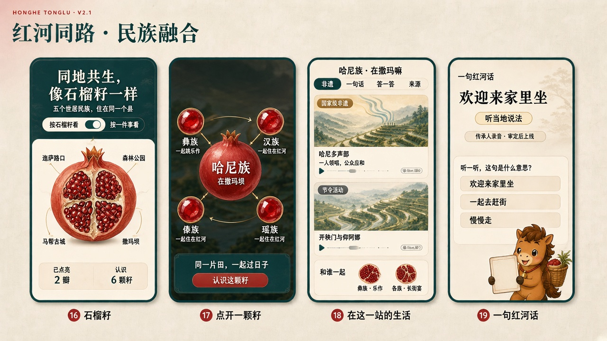

微信小程序 + 运营后台 · 产品规划汇报红河同路
各族同路走，好物一路带

微信小程序 + 运营后台 · 产品规划汇报产品组成、县里的实际问题、谁在用、游客心里想什么、六个闭环
M1 入口与首页 → M8 我的，每个模块讲链路、规则、后台对应
柜台扫码发礼品；合作社收订单、发货、对账
B1 工作台与权限 → B8 数据看板，附后台界面示意
谁来运营、分期与验收、需要县里协调的九件事、风险
技术要点（给技术同事）、视觉系统、概念稿
每个模块固定讲五件事：解决什么问题 · 一步一步怎么走（含游客心里的疑问）· 规则 · 后台谁来管 · 记录哪些数据。
| 问题 | 现在的情况 | 小程序怎么解决 | 对应模块 |
|---|---|---|---|
| 游客路过不停留 | 自驾游客下了高速直接去下一个县 | 四个点都设在停车方便的访客点，停 3 分钟就能完成一站，走一站就能领礼 | M2 M5 |
| 看了也不懂 | 景点介绍牌字多，没人讲 | 每站 3–4 张卡片 + 3 分钟音频，没信号也能播；答题帮游客记住 | M3 M4 |
| 想买买不到、带不走 | 不知道哪里有正宗的红米、茶叶、手工艺品 | 每站介绍本地物产，能下单寄回家；商品写清是哪个村、哪个合作社 | M6 |
| 内容讲错有风险 | 民族、宗教、文物相关的说法一旦讲错，影响很大 | 所有内容经县文化馆、民宗局、文旅局（古城加文物部门）审定才能上线，可以一键下线 | B2 B3 |
| 县里看不到效果 | 来了多少人、带动了多少消费，说不清 | 后台数据看板每天更新，按站、按月统计，每月自动出一页简报 | B8 |
| 谁 | 在哪用 | 他最关心 | 产品给他什么 |
|---|---|---|---|
| 自驾、周末游客 主要用户 | 停车场、景区里，手机上 | 别耽误行程、别被套路、带点东西回去 | 3 分钟一站；第一站就能领礼；能寄回家 |
| 旅居、房车客 | 森林公园营地 | 日常吃的山货能不能重复买、能不能自提 | 营地自提、一键再买一次 |
| 柜台店员 | 游客中心、观景台服务点、文创店 | 扫一下就知道能不能发、发哪一档，别出错 | 店员端：扫码、看结果、选礼品、确认 |
| 合作社、手艺人 | 村里、作坊里 | 谁买的、发什么、什么时候发、钱什么时候到 | 订单通知、填快递单号、月度对账 |
| 运营人员 | 办公室电脑 | 内容好录、库存好管、出问题能马上处理 | 运营后台 |
| 审定单位 | 办公室电脑或手机 | 不出错、改了什么看得清、能随时下线 | 审定中心：逐条审、写意见、留记录 |
另外，县领导、局领导可以开一个只看数据的账号，看数据看板和月度简报。二期再加研学团队（学校、帮扶单位）。
设计时先问「游客此刻在担心什么」，再决定页面上放什么。每个页面上线前，都要能回答它对应的那个疑问。
| 环节 | 游客心里在想 | 界面第一时间怎么回答他 |
|---|---|---|
| 第一次打开 | 这是什么？要注册吗？要钱吗？ | 首页顶部一句话说明；浏览、听音频都不用登录；全程不收费 |
| 点打卡 | 会不会一直定位我？ | 按钮下方写「只在点击时取一次位置」；隐私弹窗写明用途 |
| 开车时 | 能不能边开边打卡？ | 必须先选「我已停稳」或「我是乘客」；车还在走时不给打 |
| 山里没信号 | 打不了卡、听不了音频怎么办？ | 进山前提示下载离线包；没信号可以扫现场立牌码 |
| 看内容 | 要看多久？ | 站点页第一行写「约 3 分钟」 |
| 答错题 | 会不会扣分？丢不丢人？ | 不扣分，先看讲解，看完还给 3 分；没有倒计时、没有排行榜 |
| 看到分数 | 分数能干嘛？能抵钱吗？ | 直接写「现在可领第二档」；写明「不能提现，不能抵现金」 |
| 领礼前 | 现在领，还是再走一站领更好的？ | 「现在领是第二档，再走一站可领第三档，今年只能领一次」，让游客自己选 |
| 买东西 | 是不是骗游客的高价货？ | 写清生产者、村寨、采收时间；只有一个价格，没有划线价和倒计时 |
| 问问题 | 问了会不会乱答？ | 只回答审定过的问题，每个答案标来源；答不了就给柜台电话 |
在访客停车场停稳，副驾选「我是乘客」，点「我到了」。小程序只取这一次位置。
四张卡片、一段 2 分 40 秒的音频，孩子在车边听完。山里没信号也能放。
三道题。第二题答错，先看讲解，再点「我记住了 +3」，这一站得 23 分。
手机提示「现在可领第一档，再走一站可领第二档」。他们决定下午再领。
梯田红米加进心愿单。入口站只让收藏，不在停车场催付款。
观景台再打一次卡，石榴里撒玛坝这一瓣亮了，认识了哈尼族、彝族两颗籽。
出示领礼码，店员核对证件原件后发第二档「同路礼」，手机上立刻变成「已领取」。
红米选「寄回家」。合作社收到订单：「买家在撒玛坝看完梯田一站后下单」。
同一天，后台看板上多了 2 次打卡、2 次看完、1 份礼品、1 笔订单。
「闭环」指一件事从开始到结束都有人负责、有记录，结束时的结果还能反过来改进开头。一期上线前，这六个都要跑通。
首页顶部「红河同路 · 各族同路走，好物一路带」、一张大图、八个入口
不要求登录一条公告：森林公园防火期请勿携带火种
防火公告置顶，不能关四张卡片，写着每站讲什么、在哪停车
四站没有先后，任选停车点、今天是否开放、约 3 分钟、能得 30 分、这站的物产
没到现场能看，不能答题点「到达打卡」
进入 M2从哪进来：① 四站停车场、游客中心的现场立牌码（最重要，扫了直接打开这一站的打卡页）② 「红河马帮古城景区」公众号菜单 ③ 朋友分享、微信搜索 ④ 高速出口、加油站的宣传物料
这一站的插画，「你现在应该在：观景台停车场」
我停的地方对吗？写游客真正站的地方，不写景点大名
「我已停稳」「我是乘客」两个按钮，必须选一个
开车能打吗？不选不能点下一步
大圆按钮，下方小字「只在点击时取一次位置」
会不会一直定位我？只在这一刻取位置
微信隐私弹窗：位置只用于确认到达
我的位置会被拿去干嘛？同意后才取位置
按钮外圈一圈圈扩散，「正在确认位置…」
要等多久？和打卡范围比对，最多等 8 秒
同路册盖章，石榴里这一瓣亮起，吉祥物庆祝
然后呢？给两个按钮：去认识这一瓣 / 先看这一站
| 没打上时 | 系统怎么判断 | 游客看到（界面上不出现「失败」二字） | 下一步 |
|---|---|---|---|
| 还没到 | 不在打卡范围内 | 还没到 · 距打卡点约 2.3 公里 | 可以先看内容，不能答题 |
| 车还在走 | 速度明显快于步行（每秒 3 米以上） | 请停稳后再打卡（橙色） | 不给任何「继续」按钮 |
| 信号弱 | 8 秒没取到位置，或位置误差太大 | 定位信号弱，可以扫现场立牌码 | 打开扫码 |
| 今年已打过 | 本自然年已在这一站打过卡 | 今年已在这一站打过卡 | 可以重看，不重复计分 |
主题大卡 +「约 3 分钟 · 可得 30 分 · 内容已审定」
要多久？
3–4 张卡片，每张不超过 120 字
讲得靠谱吗？卡片底部写审定单位和日期
不超过 3 分钟的普通话音频，有文字稿
没信号能听吗？下载过离线包就能听
3 道题，题目都出自刚看过的卡片
会不会很难？
「答对了 +10」
—记分
先翻出讲解，看完按钮变成「我记住了 +3」
会扣分吗？不扣分，继续答
印章填色；本站得分、累计分、现在可领第几档
接下来干嘛？三个出口：领礼 / 好物 / 下一站
| 站 | 主题 | 讲的内容 |
|---|---|---|
| 迤萨路口 | 同住一个县，同走一条路 | 县情、五个世居民族、这一路会遇到什么 |
| 马帮侨乡森林公园 | 大家共用一沟水 | 森林—村寨—梯田—水系；护林防火；寨神林的敬重礼仪 |
| 马帮古城 | 出门的人和等的人 | 马帮、侨乡、「江外建筑大观园」；文物保护礼仪 |
| 撒玛坝梯田 | 同一片梯田，同一张长桌 | 梯田与灌水季、开秧门、长街宴；乐作和多声部分开讲 |
但不能答题、不记分。这样没到现场的人也能先了解。
不用站在停车场答完，也不用重新定位。
讲解随时可以回看。每站满分 30，四站 120。
讲解必须引自已审定的内容卡；没有倒计时、没有排行榜。
去领礼 / 看这站好物 / 下一站怎么走（只给距离和停车点，导航用手机地图）。
| 石榴的部分 | 代表什么 |
|---|---|
| 四瓣 | 四个站。在这一站打了卡，这一瓣由米色变成红色 |
| 每瓣五颗大籽 | 世居五族：汉、哈尼、彝、傣、瑶。一样大、一样颜色，不按人口排 |
| 其余小籽 | 生活在红河的其他各族群众 |
| 籽带金边 | 已认识：看完这颗籽的非遗卡并答过题 |
| 虚线籽 | 内容还在整理，暂不讲。宁可空着，不编 |
| 四瓣全亮 | 称号「长廊同心人」，头像边框换成石榴纹 |
界面名称「同心石榴」，副标题「交往交流交融 · 研学」。「民族融合」只作内部主题词，不出现在界面上。
石榴里这一瓣由米色变成红色
这是什么？按钮「去认识这一瓣」
提示「每瓣五颗大籽是世居五族，点一颗看看」
点哪个？没打卡的瓣能看，不能答题
放大到中间，同瓣另外四颗围在四周，用金线连着，每颗下面写一起做的事
它和别的民族有什么关系？这一屏讲的就是「同地共生」
非遗卡：名称、级别、一句话、音频；底部固定「和谁一起」
说的是真的吗？级别标签必须有出处
答对后这颗籽带金边
—算在这一站 3 道题里，不额外加分
四瓣全亮，称号边框变化
—称号「长廊同心人」
每颗籽放大后写一句县情（如「红河县是全国最大的哈尼族聚居县」），下面列「在哪一站可以认识更多」，点了直接跳过去。
放大后写「我们也住在红河县」「这颗籽的内容正在和县文化馆、民宗局一起整理」，并列出这一瓣里已经可以认识的籽。
长街宴、马帮与侨乡这类各族一起做的事，放在「和谁一起」里；乐作舞在哈尼族、彝族两颗籽里互相指向。
点手机里任意一颗大籽：它放大到中间，同瓣另外四颗围在四周；再点「认识这颗籽」进入详情，答对后籽带金边。点下面的按钮，模拟在某一站打了卡。
| 站（瓣） | 一期有审定内容的籽（其余显示「整理中」） |
|---|---|
| 迤萨路口 | 五颗都是目录：一句县情 +「在哪一站认识更多」 |
| 森林公园 | 暂无，待县文化馆、民宗局提供 |
| 马帮古城 | 傣族 · 傣族传统制陶（省级非遗）；彝族（尼苏）刺绣待文化馆确认 |
| 撒玛坝 | 哈尼族 · 多声部（国家级）、开秧门与仰阿娜（节令活动）；彝族 · 乐作舞（国家级，哈尼族、彝族世代相传） |
级别标签只用「国家级非遗」「省级非遗」，必须有出处；开秧门、仰阿娜、长街宴标「节令活动 / 生活习俗」。
如「彝族 · 乐作」「各族 · 长街宴」，点了直接跳到对应的籽。
听一段录音选意思，不计分、不做跟读打分。底部写「学一句当地话，是为了更好地交流」。
每站仍是 3 道题、30 分，分到这一瓣里有内容的籽上。
| 东西 | 证明什么 | 怎么来 |
|---|---|---|
| 印章 | 到过 | 打卡 |
| 同路分 | 看懂了 | 答题：对 10 分，错 3 分（先看讲解） |
| 称号 | 走了几站 | 1 站红河来客 · 2 站红河同路人 · 3 站红河熟客 · 4 站长廊同心人 |
| 礼品 | 县里的一份感谢 | 柜台店员扫码发放 |
| 档位 | 条件 | 礼品示例 | 可领柜台 |
|---|---|---|---|
| 一档 · 一站礼 | 任意 1 站 | 梯田红米小袋 / 本地茶小样 / 竹编书签 | 四站都可以 |
| 二档 · 同路礼 | 2 站，≥ 40 分 | 红米小礼盒 / 竹编杯垫 | 四站都可以 |
| 三档 · 熟客礼 | 3 站，≥ 70 分 | 傣陶小器 / 山货组合 | 森林公园、古城、撒玛坝 |
| 四档 · 同心礼 | 4 站，≥ 100 分 | 手艺人署名文创 + 梯田红米 | 古城、撒玛坝 |
取当时达到的最高一档；领过之后当年不能补差升档。家庭出游每人各自登记、各自领。
第一档门槛很低，只走了入口站的游客也能在入口游客中心拿到一份小礼。
不能提现、不能抵现金、不能在商城抵扣。商城结算页不出现任何积分字样。
只能由店员核销。礼品实物和数量由县文旅局和合作社商定，后台随时可调。
称号、分数、四枚印章、「现在可领第二档」
我能领什么？实时算可领档位
「现在领是第二档；再走一站可领第三档。今年只能领一次」
现在领还是再走？让游客自己选
第一次领时，在「常用游客」里填姓名和证件号
安全吗？为什么要填？只存加密结果，不存原号
二维码 30 秒自动刷新，下面 6 位数字，「请带证件原件」
要带什么？屏幕自动调亮
店员核对证件原件后发放（见店员端）
—只有登记过的店员能扫
页面立刻变成「已领取 · 第二档 · 红米小礼盒 · 撒玛坝 · 15:20」
领到没有？称号和印章还能继续攒
为什么要登记证件：普通小程序拿不到微信的实名信息，「每个证件每年领一次」只能靠游客自己登记、柜台核对原件来保证。
站点页底部「这一站的物产」2–4 件
这地方产什么？商品必须关联站点
一个价格；「来源档案」写生产者、村寨、采收时间
正宗吗？贵不贵？没有划线价、倒计时
入口站（迤萨路口）只能「加心愿单」
刚下高速不想买不在停车场催付款
寄回家 / 柜台自提 / 营地自提，微信支付
带不走怎么办？统一由运营主体收款
「买家在撒玛坝观景台看完梯田一站后下单」
—见合作社端
订单页显示「已发货 · 快递单号」
什么时候到？填单号后通知游客
评价入口；有问题走售后
坏了找谁？机器初审 + 人工复核
「再买一次」，旅居客常用
还想要计入复购率
常见问题按钮：哪里停车、厕所在哪、礼品怎么领、灌水季是什么时候
输入问题
在已审定的问答库里查答案 + 下方一行来源（如「来源：红河县文化馆 · 已审定」）
记录「这个问题还没有审定过的说法，可以问柜台工作人员」+ 柜台电话
记进「未答问题」直接给标准回复
不查找，记录一期的问驮驮是查问答库，不会自己编答案，所以不需要做大模型备案。二期如果要接大模型，要先完成生成式人工智能服务备案和安全评估，并且仍然只复述审定过的内容。
同路卡（称号、分数、印章、可领档位）· 同路册（四页四枚印章）· 我的礼品
我的订单 · 电子发票 · 售后
证件登记、同行人。家庭出游每人各自登记
离线包下载 · 现场礼仪六条：拍摄、宴席、乐作、寨神林、文物、防火
服务 / 救援 / 投诉电话 · 意见反馈 ·「我发现内容有误」
出品单位、指导单位、内容审定单位。州级品牌联名标识只放在这里
只有后台绑定过的店员、合作社，才会在这里看到「店员工作台」「商家工作台」入口。普通游客看不到。
柜台名、今日已发放、各档库存，大按钮「扫领礼码」
今天还剩多少？每次进入校验身份
出结果卡；扫不出时手输 6 位数字
强光下扫不出怎么办？30 秒有效的一次性码
「张** · 证件后四位 2381 · 走过 2 站 · 64 分」，勾选「已核对」
是不是本人？不勾不能发
本柜台这一档可发的礼品和余量，按游客意愿选
还有没有货？只列本柜台有的
「已发放」，游客手机同时变成「已领取」
发错了怎么办？库存减一；10 分钟内可申请撤销
谁能用：后台按「微信身份 + 柜台」登记的店员。离职后在后台一停用，就进不来了。店员不进运营后台，只用手机。
| 结果 | 店员看到 | 店员怎么做 |
|---|---|---|
| 可发放 | 档位、领取人、可发礼品 | 核对证件 → 选礼品 → 确认 |
| 已发放 | 发放时间、哪个店员 | 下一位；10 分钟内可申请主管撤销 |
| 今年已领 | 这个证件今年在哪领过哪一档 | 向游客解释每证每年一次 |
| 码已过期 | 请游客刷新后再扫 | 重新扫 |
| 本柜台无此档 | 第四档需在马帮古城或撒玛坝领取 | 告诉游客可领柜台 |
| 库存不足 | 本档礼品已发完 | 换同档其他礼品，或告诉游客其他柜台 |
| 未登记证件 | 游客还没登记证件 | 请游客在「我的 → 常用游客」登记后刷新 |
| 网络异常 | 需要联网才能核销 | 稍后重试。不提供离线发放，避免重复发 |
微信服务通知 / 短信：「有一笔新订单」
谁买的？买了啥？不习惯看手机的打电话
商品、数量、收货方式、买家在哪一站之后下单
这单是从哪来的？写明下单场景
备货，填快递单号；自提订单点「已备好」
什么时候要发？超过约定时间自动提醒
游客收到发货通知、收货、评价
客人满意吗？评价审核后公开
在「对账」里看本月订单和应结金额，确认
钱什么时候到？每月 5 日出单，确认后打款
不习惯用手机的合作社，由运营人员在后台代为操作。一期由一个运营主体统一收款、按月线下结算；二期开通微信支付分账，钱直接到合作社账户。
| 角色 | 谁 | 能做什么 |
|---|---|---|
| 系统管理员 | 运营主体技术负责人 | 账号、角色、系统设置 |
| 运营人员 | 运营主体 | 录内容、发公告、管礼品商品订单、处理留言 |
| 审定员 | 文化馆、民宗局、文旅局、文物部门各指定人员 | 只审分给自己的内容，写意见，通过或退回；可申请下线 |
| 柜台主管 | 各景区服务点负责人 | 看本柜台库存和发放记录，审批撤销，提补货 |
| 领导查看 | 县领导、局领导 | 只看数据看板和月度简报 |
| 店员 · 合作社 | 柜台、合作社 | 不进后台，只用小程序里的工作台 |
操作日志：谁、什么时间、改了什么，全部留痕，不能删除。
| 管什么 | 硬规则 |
|---|---|
| 内容卡 | 正文 ≤ 120 字；没有审定记录不能上线 |
| 音频 | ≤ 3 分钟，附文字稿；没有授权书的录音不能选 |
| 题目 | 讲解必须引自已审定的内容卡 |
| 石榴籽 | 状态由审定结果决定，不能手动改 |
| 非遗卡 | 级别必须填出处 |
| 县情数据 | 只改这一处，引用它的卡片和题目同步更新 |
| 素材库 | 标注授权和到期日，未授权不能选用 |
| 首页大图 | 只放季节、正式活动、开放提醒 |
退回必须写意见；运营改好后从被退回的那一环重新审。
任何审定单位都能申请下线，运营可紧急下线。内容卡下线时，关联的题目、石榴籽同步下线；游客已得分数保留，看过的卡显示「该内容正在更新」。
每张内容卡底部显示「内容经县民宗局、文旅局、文化馆审定 · 年月」。
每站一个中心点和半径；匝道、主路、曾经滑塌的冲沟标为禁设区。
立牌损坏或被人替换，作废旧码、生成新码、下载打印。
高火险期设为置顶，游客端关不掉。
「部分开放 / 暂停」必须写原因，如望江亭建设中、雨季道路维护。
车速阈值、定位超时、离线包版本，不用改程序。
| 管什么 | 说明 |
|---|---|
| 档位规则 | 每档的站数、分数门槛、可领柜台 |
| 礼品 | 名称、档位、供货合作社、单价（对账用） |
| 库存 | 每柜台每种礼品；低于预警线自动提醒 |
| 店员 | 姓名、微信身份、所属柜台、启用 / 停用 |
| 核销记录 | 领取人（脱敏）、档位、礼品、柜台、店员、时间；可导出 |
| 撤销 | 店员 10 分钟内申请，主管审批，库存退回 |
| 异常提醒 | 同一店员短时间大量发放、同一证件多次尝试 |
| 管什么 | 说明 |
|---|---|
| 合作社 | 负责人、所在村、资质、收款信息 |
| 商品 | 关联站点、来源档案都是必填 |
| 来源档案 | 生产者、村寨、采收时间、批次；每批更新 |
| 订单 | 记录「在哪一站之后下单」 |
| 发货 | 可代填单号；超时自动提醒 |
| 售后 | 退款、补发，记录原因 |
| 结算 | 一期按月线下结算；二期微信分账 |
| 评价 | 机器初审 + 人工复核；不开放游客互评区 |
| 管什么 | 说明 |
|---|---|
| 用户查询 | 按手机尾号、订单号查；姓名、证件号全部脱敏 |
| 证件登记 | 只存加密结果，后台也看不到完整证件号 |
| 问答库 | 问题、答案、来源；和内容卡一样要审定 |
| 未答问题 | 运营每周整理，写答案后送审 |
| 敏感词 | 命中给标准回复；词表由民宗局、网信部门指导 |
| 留言纠错 | 纠错直接转给对应审定单位 |
| 违规处置 | 立即下线、保留记录、按规定报告 |
| 指标 | 看什么 |
|---|---|
| 到访人数 | 打卡成功人数，按站、按天 |
| 单站完成率 | 打卡后看完并答完的比例：内容是否站着能看完 |
| 领礼人数 | 按档位、按柜台：礼品吸不吸引人、库存够不够 |
| 只走 1–2 站的领礼比例 | 「走一站也有收获」是否成立 |
| 订单与复购 | 按站点带动、按合作社：带货效果 |
| 审定覆盖率 | 应当是 100% |
| 行驶中被拦次数 | 应当越来越少 |
月度简报：每月自动生成一页，含以上指标和环比变化，可直接导出给领导。
| 单位 | 做什么 | 在后台用哪块 |
|---|---|---|
| 县文旅局 | 牵头；指定运营主体；发布内容；协调各景区 | B3 发布 · B8 看板 |
| 运营主体（文旅局指定的公司或单位） | 小程序主体认证、日常运营、录内容、商城收款与结算、客服 | B1–B8 全部 |
| 县文化馆 | 提供并审定民俗内容；联系传承人、发音人并办理授权 | B3 审定 |
| 县民宗局 | 审定民族政策与用语；指导敏感词 | B3 审定 · B7 敏感词 |
| 文物主管部门 | 审定马帮古城相关内容；文物保护礼仪 | B3 审定 |
| 各景区 | 立牌安装和维护、柜台人员、礼品存放 | B5 柜台主管 |
| 县农业农村、工信部门 | 组织合作社、手艺人入驻，核实来源 | B6 合作社资料 |
| 合作社、手艺人 | 供货、发货、售后 | 合作社端（手机） |
| # | 事项 | 建议牵头 | 不做会怎样 |
|---|---|---|---|
| 1 | 确定运营主体，完成小程序主体认证 | 县文旅局 | 小程序无法上线 |
| 2 | 服务类目与资质：旅游服务、食品经营许可证 | 运营主体 | 不能用定位功能；不能卖食品 |
| 3 | 微信支付商户号 | 运营主体 | 不能收款 |
| 4 | 四站立牌位置确认与制作安装 | 县文旅局、各景区 | 不能扫码打卡；没信号的地方打不了卡 |
| 5 | 首批内容提供与四方审定 | 文化馆、民宗局、文旅局、文物部门 | 内容不能上线 |
| 6 | 传承人、发音人授权；奕车、尼苏纹样授权 | 县文化馆 | 相关音频和纹样不能用 |
| 7 | 礼品实物、数量与各柜台人员 | 县文旅局、合作社 | 领礼环节跑不通 |
| 8 | 合作社、手艺人入驻与来源核实 | 县农业农村、工信部门 | 商城没有货 |
| 9 | 隐私保护指引与用户协议 | 运营主体 | 微信审核不通过 |
| 风险 | 应对 |
|---|---|
| 游客在匝道停车拍照、开车时操作 | 打卡点只设在访客点；必须先选「已停稳 / 乘客」；车还在走不给打卡；匝道不出现任何拍照提示 |
| 山区信号弱 | 离线包、扫立牌码打卡、记录待同步；只有领礼核销必须联网 |
| 民俗、民族表述出错 | 四方审定、审定记录展示、一键下线、游客纠错入口 |
| 「交往交流交融」被误解为同化，或只讲差异 | 对外统一用「交往交流交融」；每站落到共同性，同时尊重差异；民宗局专项审查 |
| 礼品被重复领取 | 证件登记去重、柜台核对原件、每证每年一次、30 秒刷新的码、只有登记店员能核销、核销必须联网 |
| 合作社发货慢、质量问题 | 超时提醒、售后记录、退款率进看板；连续出问题的商品下架 |
| 森林火灾、山体滑塌 | 防火公告置顶；营地商品页常驻提示；不卖明火类商品；立牌避开滑塌点 |
| 把游客引到未建成或受保护的地方 | 望江亭建成前只讲故事；开放状态由后台控制；文物礼仪就近提示 |
| 数据过时、素材未授权 | 县情数据集中管理每年更新；素材库标注授权，未授权的不能选用 |
只在点击时调用一次 wx.getLocation；申请接口权限、在 requiredPrivateInfos 中声明、写入隐私保护指引。
部分机型 speed 不可信：大于 3 米/秒才拦；取不到时只依赖「已停稳 / 乘客」的选择。阈值在 B4 可配。
站点离线包存本地文件目录；打卡、答题标「待同步」，联网后补传；只有核销必须联网。
普通小程序拿不到实名信息：游客自填，服务端只存加盐哈希去重，柜台核对原件；二期视资质接二要素核验。
服务端签发 30 秒一次性令牌 + 6 位备用码；核销接口校验店员白名单与柜台绑定，幂等防重复。
小程序不能操作 SVG 节点：按 pomegranate-layout.json 坐标用 view 或 canvas 绘制，只用缩放和透明度动画。
主包 ≤ 2MB：插画、吉祥物走 CDN（webp），四站各一个分包；自定义 tabBar，图标 PNG 81×81。
一期为问答库关键词检索，无需大模型备案；后台按角色做数据权限，操作日志只增不删。
完整说明：07 号文件《缺陷修复与实现方案》（28 处修复）；08 号文件《产品规划说明报告》（本汇报的文字版）。
马帮小马，铃铛 + 竹背篓（红米、茶叶），不穿民族服装，谁都能代入。
路、水、田、席、歌、艺：都是生活里的事，不用民族字。
概念板用来确定风格和氛围，图中个别文字有误；准确的文字和交互以前面的界面重绘稿为准。点击可放大。






点击任意处关闭 · 概念稿仅作风格参考
各族同路走，好物一路带